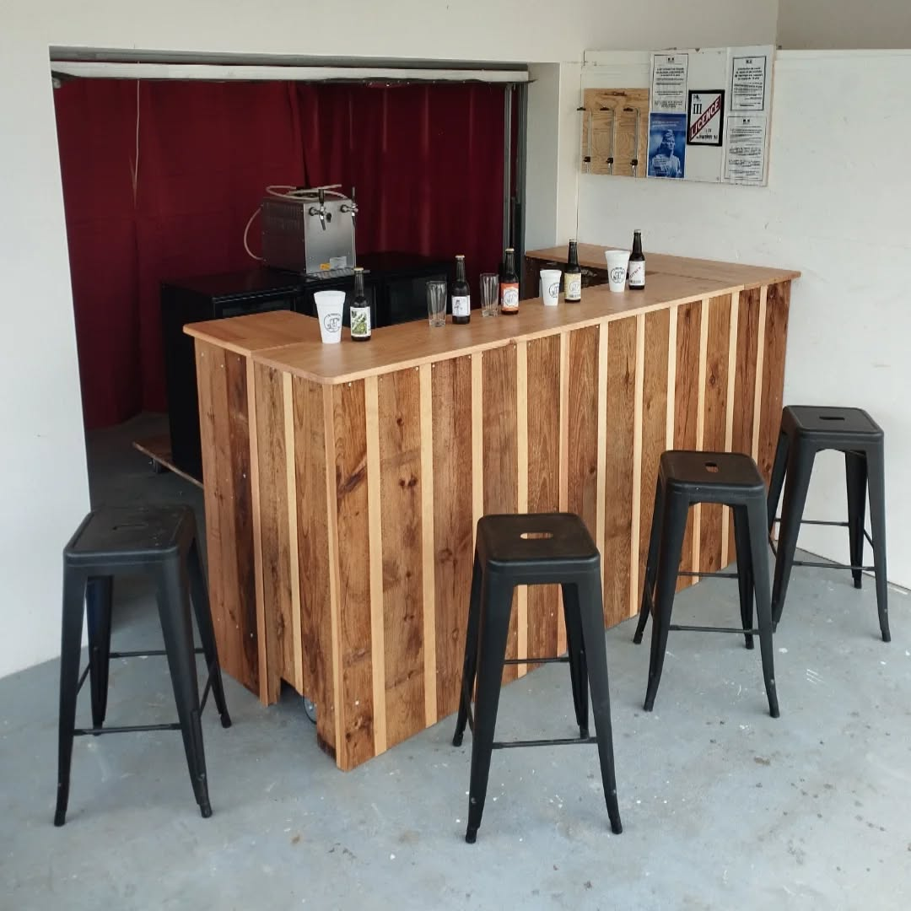

Taller / Landes
On se retrouve
à la brasserie.
Dégustations, échanges avec le brasseur et tireuses pour vos événements.

Les dégustations
Un verre.
Une conversation.
Le premier vendredi de chaque mois, de 18 h à 21 h.
551 Route de Cap de Lelane
40260 Taller, Landes.
Découvrez les créations et échangez avec Éric sur le brassage.
Confirmer une visite ↗Mariages / Anniversaires / Associations
La brasserie
s’invite chez vous.
80 € / week-end
Location offerte à partir de trois fûts achetés. Fûts sur réservation : prévoir dix jours d’avance.
Tarif repris de la page existante ; faites confirmer les conditions et la disponibilité avant réservation.
Demander une tireuse ↗